识别面
角色状态已经覆盖外星人伪装、弱点开启、扫描高亮、平民待机与假线索表达。
《游戏内美术素材总览预览》基于当前游戏内已整理素材进行汇总，目标是让策划、美术和程序一眼读清角色识别、 掩体语义、反馈链、HUD 与界面套件已经覆盖到什么程度。首屏数字按当前目录汇总，下方分区展示代表性预览卡。
角色状态已经覆盖外星人伪装、弱点开启、扫描高亮、平民待机与假线索表达。
命中确认、误伤警告、扫描脉冲与掩体命中已经形成完整战斗反馈链。
HUD、商店与武器库套件已具备评审展示粒度，适合继续做接入验证。
默认、精准、连发、电磁
识别链已形成目录层级
读图遮挡语义已成组
战斗结果链路已拆开
命中与破面已预留
磨损、污渍与布料层
基础战斗表达已覆盖
商店与武器库可汇报
四张武器预览卡把默认、精准、连发与电磁四种射击定位并排展开，方便快速说明使用差异与战斗职责。
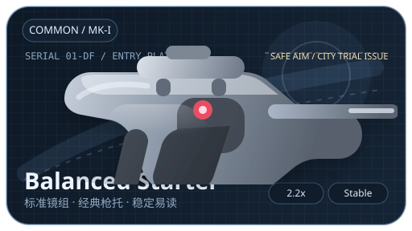
作为基础版本使用，适合说明主武器的标准命中节奏与通用识别轮廓。
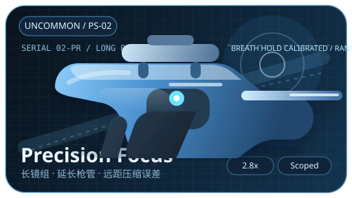
突出单发控制与弱点命中语义，适合搭配高价值目标与远距判读。
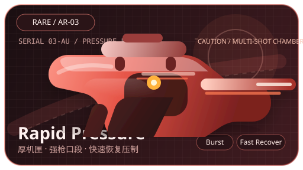
强调连续输出与区域压制，便于说明反馈密度与掩体命中频率。
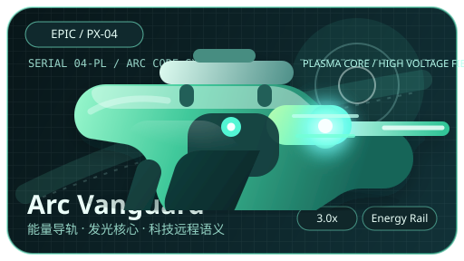
承担高辨识度重击角色，用来带出电磁质感和特殊命中反馈的差异。
本区聚焦玩法识别语义，展示外星人与平民在待机、暴露、扫描和误导状态下的辨识差别。

强调外星人未暴露时的平静姿态，是角色识别链的起点素材。

用于说明高价值命中时刻，让战斗判断不只停留在外观层。

强化扫描后可见状态，便于策划和程序评估 HUD 与角色联动。

保留平静日常态，帮助区分不可误伤对象的基础阅读语义。

用于说明平民也会制造视线干扰，保证识别玩法有足够判断成本。
墙角、路灯、停放货车与广告牌共同构成常见遮挡语义，让读图与掩体判断更接近实际对局。

适合说明高频边角遮挡，便于验证角色是否能在半遮挡里被读清。

用于说明细长体量也具备可识别的遮挡关系，不会只剩纯装饰作用。
承担大面积视线阻隔，是角色扫描与绕后阅读的重要场景节点。

适合说明上方遮挡与轮廓切割，让场景阅读不仅停留在平面墙体。
这一组素材用于说明战斗结果如何被即时读到，从正向命中到误伤告警都已经具备明确反馈节点。

用于明确击中有效目标的结果反馈，是战斗节奏最核心的一环。

帮助团队确认平民误击时的惩罚提示已经能被快速感知与区分。

连接角色识别与 HUD 扫描逻辑，让信息揭示不只停留在文案层。

用于说明子弹落在遮挡体上的结果，补齐读图与命中之间的反馈闭环。
两张贴花占位与三张材质覆盖卡说明工程化底层已经具备贴花、磨损和污渍层的接入条件。
命中表面后的基础破面占位已经明确，可直接对接材质与特效层。
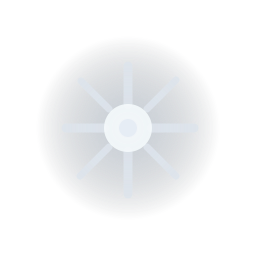
强调掩体承伤后的局部标记，便于后续接入不同材质表面的命中差异。
说明角色表面已经具备可叠加的材质层，能支持更细的近景观感。
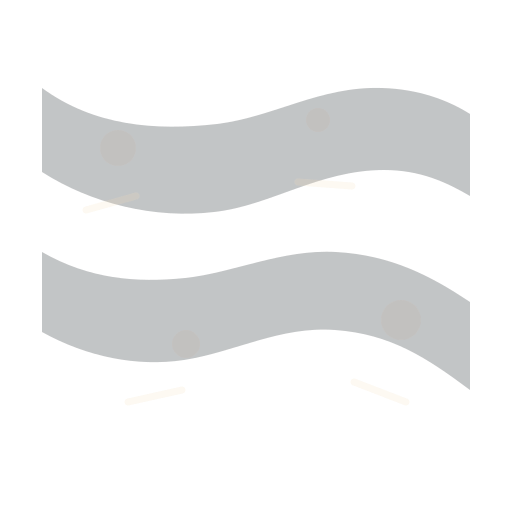
帮助场景从纯净建模过渡到更有使用痕迹的工程化展示状态。
用于说明武器表面已经具备磨边和消耗感，不再是单层干净材质。
这一组素材确认了战斗 HUD 的基础表达，包括瞄准、生命、扫描与时间反馈的关键入口。
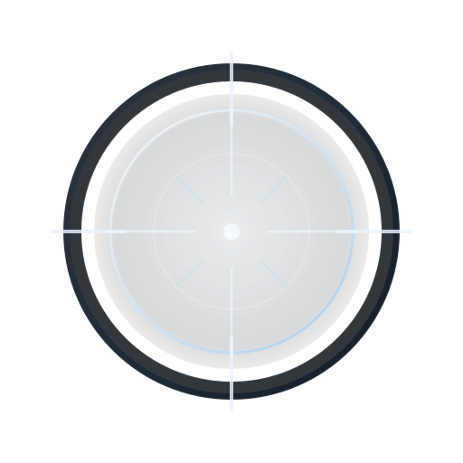
承担狙击核心视野框定，是武器玩法与 HUD 联动的第一入口。

基础数值承载面已经齐备，可继续对接受击反馈与增减动画。
与扫描高亮和扫描脉冲形成联动，让识别玩法有独立的界面入口。
承接节奏奖励与任务延时提示，保证核心规则已经具备基础图标语义。
外围界面已经不仅停留在概念层，商店与武器库的关键卡片、按钮和详情面板都已有整理结果。
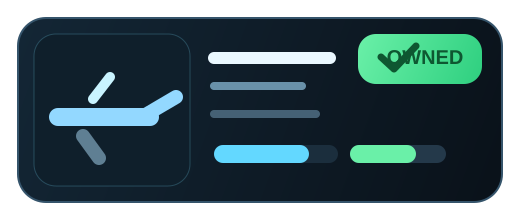
已拥有状态卡具备完整展示结构，便于说明商店内容密度和阅读顺序。
主按钮样式已经具备可用态，能继续补齐禁用、反馈与扣费流程。
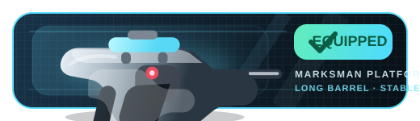
装备态卡片已经明确，便于评审武器库信息层级与状态表达是否足够清晰。

详情信息容器已搭好，适合继续向数值、特性与升级内容接入。
整体素材已从零散示意提升到可汇报的模块化状态，下一阶段可以围绕真实接入与联调验证继续推进。
角色识别、假线索与扫描提示已经形成基本闭环，玩法判断语义可直接带入评审讨论。
武器、命中反馈、掩体受击与 HUD 已能串成一条完整的战斗阅读路径。
商店与武器库关键套件已经具备展示板级别的结构，不再只是概念草图。
当前页更适合作为“可直接进入下一阶段接入验证”的项目现状总览，而不是工程清单。